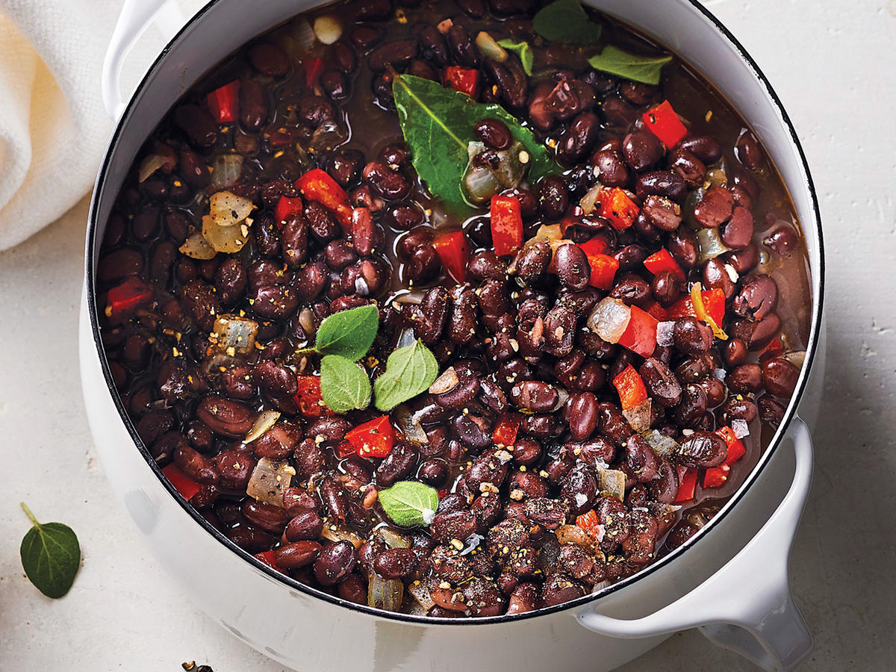

Black Bean Stew

Black Bean Stew is an amazing quick vegan recipe, which contains lots of protein.
Black Beans are accually the healthies kind of beans!
Since I've made this recipe for the first time, it has become a staple in my house!
Ingredients:
- 1 large onion
- 4 cloves gralic
- 2 Tbsp oil
- 2 cans black beans
- 1 can chickpeas
- 1 Tbsp Cumin powder
- 1 Tbsp Coriander
- 1 Tbsp Oregano
- 1 tsp Cinammon powder
- Salt and pepper to taste
- 3 cups vegatble broth
Preparation:
- Finely chop the onion and crush the garlic.
- Heat the oil in the pan and fry the onion with the crushed garlic until golden in color.
- Add all the spices except salt and pepper to the pan and fry for another 2 minutes.
- Drain and wash the beans and chickpeas, next add them to the pan.
- Pour the vegetable broth and lower the heat to low. Let the mixture simmer for 15-20 minutes.
- Serve the stew with rice or any other carb of choice, add some non-dairy sour cream if available.